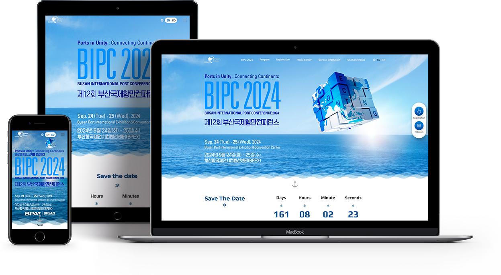
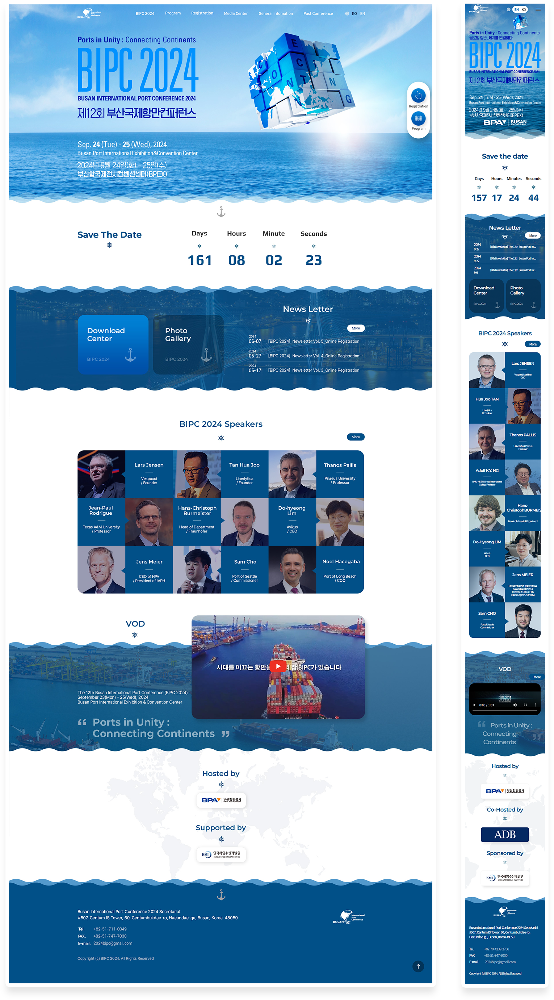

The 12th Busan International Port Conference
(BIPC 2024)
Year. 2024. 05 ~ 2024. 06
Project overview
About the organization
2013년 첫 개최를 시작으로 2024년에 12회를 맞이하는 부산국제항만컨퍼런스는
"글로벌 항만, 세계를 연결하다(Ports in Unity: Connecting Continents)"라는
주제로 전 세계의 물류 전문가들과 항만 전문가들이 모여 교류하는 자리입니다.
특히 올해는 부산항만공사의 창립 20주년인 만큼, 보다 의미있는 컨퍼런스를 만들기 위해
부산항만공사측에서 기존 홈페이지 전체 리뉴얼을 요청하였습니다.
Use Stack
- Photoshop
- Illustrator
- html5
- css3
- js(GSAP)
Project Contribution
디자인 100% + 퍼블리싱 100%
Before
기본적인 블로그 템플릿처럼 딱딱하고 디자인요소가 전혀 없는 기존의 홈페이지입니다.
컨퍼런스에서 가장 중요한 연사 소개부분과 메인 슬로건 영역이 묻혀버리고,
크게 중요하지 않은 뉴스레터 신청부분과 스폰서 로고가 크게 보이고 있습니다.
After
전체적으로 바다속에 있는것같은 느낌을 원하셔서 색상은 파란색, 바다느낌으로 디자인하였고
중요한 연사 부분은 눈에 띄면서도 너무 튀지 않게 디자인했습니다.
페이지를 볼때 부드럽게 넘어가도록 스무스한 스크롤 효과도 추가했습니다.
부산항만공사측에서 전체디자인과 메인화면 애니메이션 부분이 독특하고 새롭다는 평을 받았습니다.